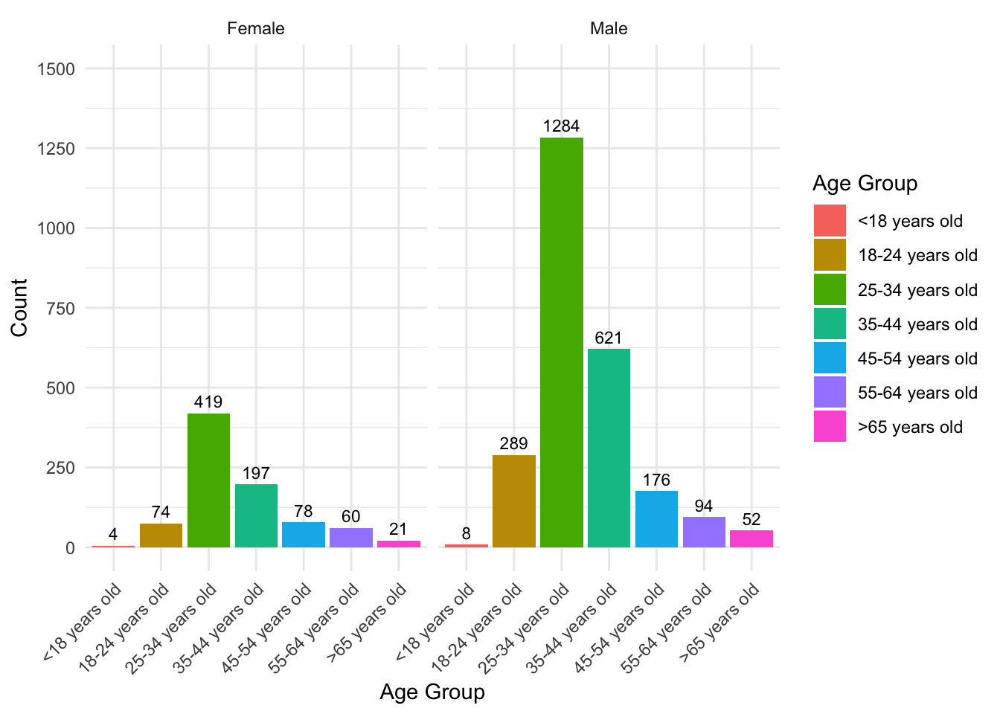

coffee_survey<-coffee_survey%>% mutate(id=row_number())Problem Description
- In today’s competitive coffee market, understanding what drives consumer behavior is more important than ever. This post explores the impact of demographic factors—specifically age and gender—on coffee consumption patterns. By uncovering how different groups prefer their coffee, companies can refine their marketing strategies to better connect with their target audiences, foster stronger brand loyalty, and ultimately stand out in the crowded marketplace.
Data Description
The data used in this analysis comes from a TidyTuesday coffee consumption survey. The dataset captures consumer behavior across various age groups and genders, highlighting preferences for different coffee types. Key variables include:
Age group: Categorical variable representing age ranges (e.g., 18-24, 25-34).
Gender: Male or female.
Coffee type: Different coffee types (e.g., Latte, Espresso, Regular drip coffee).
Count: Number of consumers for each category.
In the data cleaning process, several important steps were taken to ensure the dataset was properly prepared for analysis:
Creating a Unique Identifier: A new column, id, was added to the dataset using the mutate() function. This unique identifier helps track each individual respondent.
- Selecting Relevant Variables: To focus on the key aspects of the analysis, unnecessary variables were removed, and only the columns that were most relevant to coffee consumption patterns were kept, such as age, gender, cups of coffee consumed, and total spending.
coffee_survey_filtered<- coffee_survey %>% select(id,age,cups,brew,gender,purchase,total_spend,spent_equipment)
view(coffee_survey_filtered)- Filtering for Male and Female Respondents: Since the analysis focuses on the influence of gender, the data was filtered to include only respondents who identified as either male or female, excluding any other gender identities or missing data.
# Filter data to include only male and female respondents
coffee_filtered <- coffee_survey %>%
filter(gender %in% c("Male", "Female"))- Ordering Age Groups: The age variable was converted into an ordered factor to ensure that the age groups were analyzed in the correct sequence. This step ensures that the progression of age groups, from the youngest (<18 years) to the oldest (>65 years), is maintained during analysis.
# Define the desired order for the age groups
age_order <- c("<18 years old", "18-24 years old", "25-34 years old", "35-44 years old", "45-54 years old", "55-64 years old", ">65 years old")
# Convert the age column to a factor and specify the correct order
coffee_filtered$age <- factor(coffee_filtered$age, levels = age_order)These steps refined the dataset by focusing on the relevant demographic factors, filtering unnecessary information, and ensuring that categorical variables like age were correctly ordered for analysis. This clean and organized data allows for deeper insights into how age and gender influence coffee consumption patterns.
The analysis focuses on understanding the largest coffee-drinking demographics and their favorite coffee types, enabling companies to tailor marketing strategies accordingly.
Analysis
Coffee Consumption by Age and Gender
- As Figure 1 illustrates, the most significant coffee-drinking group among males is the 25-34 age bracket, with 1,284 coffee consumers. Females show peak consumption in the 35-44 age group, totaling 419 consumers. This difference highlights the importance of targeted marketing for different demographic segments as described in the Problem descritpion.

- Older consumers, especially those aged 55 and above, make up a smaller portion of the overall coffee consumer base. However, their preference for traditional coffee types like regular drip coffee suggests that this demographic remains a valuable market, particularly for classic coffee offerings.
Coffee Preferences by Gender
| Coffee Type | Male Count | Female Count |
|---|---|---|
| Pourover | 829 | 112 |
| Latte | 301 | 271 |
| Regular drip coffee | 277 | 90 |
| Espresso | 258 | 22 |
| Cortado | 218 | 45 |
| Cappuccino | 191 | 89 |
| Americano | 160 | 60 |
| Iced coffee | 83 | 48 |
| Other | 69 | 23 |
| Mocha | 61 | 41 |
| Cold brew | 57 | 32 |
| Blended drink | 20 | 20 |
- Regular drip coffee is the preferred choice for both males and females, as shown in @gen_count. For males, 829 prefer regular drip coffee, while 277 females prefer it. Younger males, especially those between 25-44, tend to favor specialty coffees like Espresso (258) and Latte (301). This insight suggests an opportunity for coffee companies to promote these coffee types specifically to younger male consumers.
Conclusion
This analysis provides valuable insights into coffee consumption trends, offering guidance for crafting more effective marketing strategies. Males aged 25-34, identified as the largest coffee-consuming group, show a strong preference for specialty beverages like lattes and espressos. Meanwhile, older consumers maintain a preference for regular drip coffee, indicating a solid market for classic coffee products.
By aligning product offerings and marketing campaigns with these demographic trends, coffee companies can improve customer engagement and foster brand loyalty, directly addressing the challenges outlined in the Problem descritpion.
Reference
- TidyTuesday Project, Coffee Consumption Dataset,
- Lone, A., Alnawah, A. K., Hadadi, A. S., Alturkie, F. M., Aldreweesh, Y. A., & Alhedhod, A. T. (2023). Coffee consumption behavior in young adults: exploring motivations, frequencies, and reporting adverse effects and withdrawal symptoms. Psychology Research and Behavior Management, Volume 16, 3925–3937. https://doi.org/10.2147/prbm.s427867